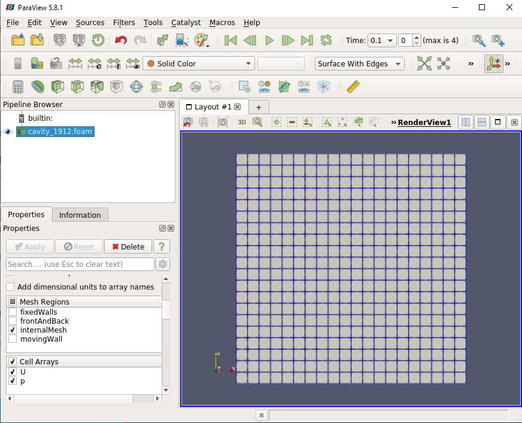
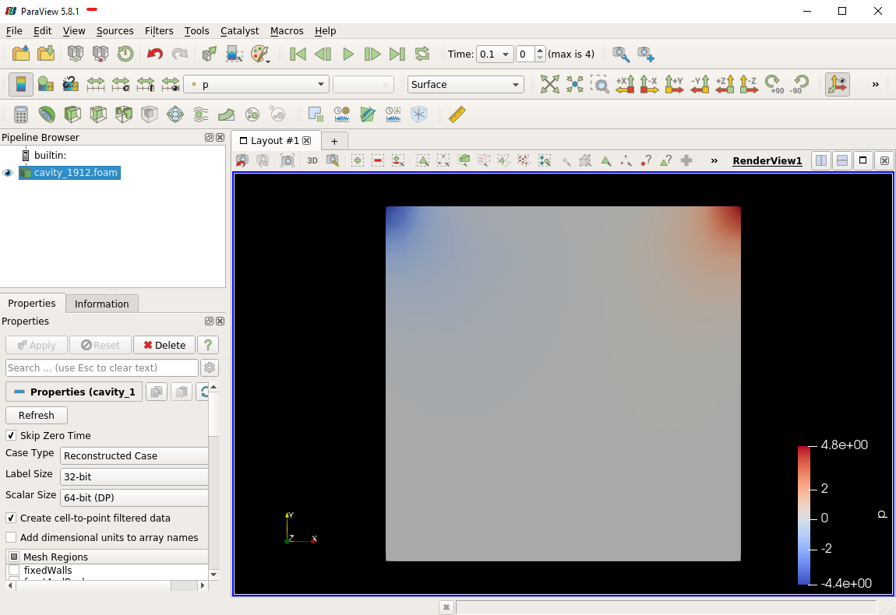
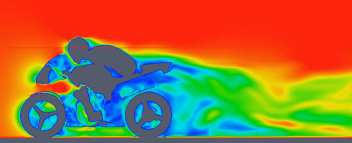

Case Study
Questions
What is
What problem do
Objectives
introduce the basics of OpenFOAM
Instructor note
15 min teaching
0 min exercises
Lid-driven cavity flow
This case uses OpenFOAM to calculate the incompressible flow in a two-dimensional square domain, see the Figure blow

Here are some suggestions for this hands-on session.
Write questions on Hackmd.
Follow the instructions below to recap what we learned during th lecture. The material is written for the Tegner cluster, but you can start on your laptop for maximum interactivity.
Although post-processing with Paraview is listed as optional (see last section in the hands-on), it is very highly recommended that you install Paraview on your machine and inspect the results of the OpenFOAM simulations. Of course, you can use another post-processor of your liking.
At some point, do login to Tegner, and get comfortable with running on iteractive nodes. For that, follow the instructions in the slides by Arash.
Use the case as a sandbox to change various settings and play with the parameters. Use the “banana-trick” to learn about possible options: change any dictionary keyword to “banana”, the case will crash showing possible valid options for the keyword.
If you have CFD experience, ask yourself: what settings would I typically need to change? Then try to figure out what dictionaries and keywords correspond to that. The teachers are there to help! Try also to dig online a little bit yourself: one of the course outcomes is that you should be able to continue develop your skills on your own.
To use OpenFOAM on Tegner, we first need to load the appropriate module. This is followed by sourcing $FOAM_BASHRC to activate the OpenFOAM environment. The $FOAM_TUTORIALS will then store the path to the tutorial collection shipped with OpenFOAM. Note, you can also use the tut command to jump to the tutorial directory and look around. Important: Always copy the tutorial to a folder where you have full write permission, never execute tutorials inside $FOAM_TUTORIALS. Also, as OpenFOAM cases are not always backward-compatible, please make sure to always copy cases from $FOAM_TUTORIALS of the current version you are using.
$ module add openfoam/1912 # Using OpenFOAM v1912
$ echo $FOAM_BASHRC
/pdc/vol/openfoam/v1912/OpenFOAM-v1912/etc/bashrc
$ source $FOAM_BASHRC
$ cp -r $FOAM_TUTORIALS/incompressible/icoFoam/cavity/cavity .
The structure of the case is shown in the following
$ cd cavity
$ ls
0 constant system
$ tree
├── 0 (time directory starting with T=0, initial conditions)
│ ├── p (pressure)
│ └── U (flow velocity)
├── Allrun (precanned run file)
├── constant (hard static stuff i.e. physical properties)
│ ├── transportProperties (Transport Model e.g. Newtonian)
└── system
├── blockMeshDict
├── controlDict (the main dictionary for controlling the simulation)
├── fvSchemes
├── fvSolution
├── PDRblockMeshDict
The default setting is to run the application simpleFoam in serial on a two-dimensional square mesh of size (20×20×1). Note that all OpenFOAM cases are three-dimensional. For a two-dimensional case the third dimension has a single computational cell, and special boundary conditions are employed. The case will run up to time 0.5 with 0.005 per step, i.e. a total of 100 time steps. The simulation results are stored every 20 time steps.
Run the case by default
$ blockMesh # create the equivalent mesh of (20x20x1)
$ icoFoam > log.icoFoam
$ ls
0 0.1 0.2 0.3 0.4 0.5 constant system
Congratulations, you were able to run your first OpenFOAM case on a PDC cluster!
Inspecting the log file
To make sure everything is OK we can look at the output logs from the OpenFOAM run. This will show us if the run actually worked as intended. To do this, inspect log.icoFoam with your favorite editor or simply use commands like tail.
$ tail -n 50 log.icoFoam
Time = 0.5
Courant Number mean: 0.222158 max: 0.852134
smoothSolver: Solving for Ux, Initial residual = 2.3091e-07, Final residual = 2.3091e-07, No Iterations 0
smoothSolver: Solving for Uy, Initial residual = 5.0684e-07, Final residual = 5.0684e-07, No Iterations 0
DICPCG: Solving for p, Initial residual = 8.63844e-07, Final residual = 8.63844e-07, No Iterations 0
time step continuity errors : sum local = 8.8828e-09, global = 4.94571e-19, cumulative = 1.10417e-17
DICPCG: Solving for p, Initial residual = 9.59103e-07, Final residual = 9.59103e-07, No Iterations 0
time step continuity errors : sum local = 9.66354e-09, global = 1.13175e-18, cumulative = 1.21735e-17
ExecutionTime = 0.31 s ClockTime = 1 s
End
There is quite a bit of information to be extracted from the logs, such as residuals of the iterative solvers and the Courant number. Depending on the simulation options, the logs may become more expressive, monitoring additional simulation aspects.
Creating the finer mesh
The cavity case is too tiny to make running in parallel a reasonable alternative. We will therefore make the mesh denser. An overview of OpenFOAM meshing will be given during day 2 of the workshop. For now, we just provide the instruction for refining without much explaination. In system/blockMeshDict, the default mesh size is set by the triple (20 20 1), in the following lines.
blocks
(
hex (0 1 2 3 4 5 6 7) (20 20 1) simpleGrading (1 1 1)
);
So, to refine we can change it to e.g. (100 100 1),
blocks
(
hex (0 1 2 3 4 5 6 7) (100 100 1) simpleGrading (1 1 1)
);
And then rerun the command blockMesh.
$ blockMesh
If you now run icoFoam you will notice that the solver is slow and that the Courant number is very high!
Time = 0.01
Courant Number mean: 0.514905 max: 4.28024
smoothSolver: Solving for Ux, Initial residual = 0.124381, Final residual = 9.84033e-06, No Iterations 374
smoothSolver: Solving for Uy, Initial residual = 0.546347, Final residual = 9.89857e-06, No Iterations 402
DICPCG: Solving for p, Initial residual = 0.937878, Final residual = 0.0449945, No Iterations 58
time step continuity errors : sum local = 0.00115914, global = -3.719e-19, cumulative = -1.47005e-18
DICPCG: Solving for p, Initial residual = 0.887143, Final residual = 9.90418e-07, No Iterations 171
time step continuity errors : sum local = 2.39948e-08, global = -4.25067e-19, cumulative = -1.89512e-18
ExecutionTime = 0.54 s ClockTime = 0 s
This makes sense: we decreased the cell size, so to keep the Courant number reasonable we also need to change the time step. This is done by changing the value of the deltaT keyword in the controlDict. We can set the time-step to 0.0005.
deltaT 0.0005;
Running in parallel
Let us now run the case in parallel. Inspecting system/decomposeParDict, we see that the case is set to be decomposed into 4 subdomains.
numberOfSubdomains 4;
We will leave this as is and now we can decompose the case and run in parallel.
$ decomposePar
This will create directories processor0 to processor3, containing the subdomains. To run the case, execute the following command.
$ mpirun -np 4 icoFoam -parallel > logfile.icoFoamParallel
Upon completion we can reconstruct the solution on the whole domain:
$ reconstructPar -latestTime
Here, the -latestTime flag tells the program to only reconstruct the last time-step.
To do yourself:
Now that we decreased the time step there is a lot of output saved, look at e.g. processor0. Change the writeInterval in the controlDict to reduce that.
Play around with mesh sizes and change decomposeParDict to run on a larger number of processors.
Go through https://www.pdc.kth.se/support/documents/run_jobs/job_scheduling.html#how-to-submit-jobs to learn how to submit jobs to the cluster queue. Try to submit your cavity case as a short queued job. A simple jobs script example is available in the slides by Arash.
Increasing the Reynolds number
We will now increase the Reynolds number to 100, at which point the solution takes a noticeably longer time to converge.
$ cp -r cavity cavityHighRe
and then edit transportProperties dictionary to reduce the kinematic viscosity to 0.001
nu 0.01;
to
nu 0.001;
Increase the endTime from 0.5 to 2 so that icoFoam run upto 2 seconds.
$ icoFoam
Turbulence modelling (optional)
The need to increase spatial and temporal resolution then becomes impractical as the flow moves into the turbulent regime, where problems of solution stability may also occur. Instead Reynolds-averaged simulation (RAS) turbulence models are used to solve for the mean flow behaviour and calculate the statistics of the fluctuations. The standard k-epsilon model with wall functions will be used in this tutorial to solve the lid-driven cavity case with a Reynolds number of 10^4. Two extra variables are solved for: k, the turbulent kinetic energy, and epsilon, the turbulent dissipation rate. The additional equations and models for turbulent flow are implemented into a OpenFOAM solver called pisoFoam. To setup the model you will need three additional files in the 0 directory: nut, k, epsilon. Create them by making a copy of the p file, and then modify them as needed.
A range of wall function models is available in OpenFOAM that are applied as boundary conditions on individual patches. This enables different wall function models to be applied to different wall regions. The choice of wall function models are specified through the turbulent viscosity field, nut, in the 0/nut file:
dimensions [0 2 -1 0 0 0 0];
internalField uniform 0;
boundaryField
{
movingWall
{
type nutkWallFunction;
value uniform 0;
}
fixedWalls
{
type nutkWallFunction;
value uniform 0;
}
frontAndBack
{
type empty;
}
}
You should should now open the field files for k and epsilon ( in 0/k and 0/epsilon) and set their boundary conditions. For a wall boundary condition wall, epsilon is assigned an epsilonWallFunction boundary condition and a kqRwallFunction boundary condition is assigned to k. The latter is a generic boundary condition that can be applied to any field that are of a turbulent kinetic energy type, e.g. k, q or Reynolds Stress R
Turbulence modelling includes a range of methods, e.g. RAS or large-eddy simulation (LES), that are provided in OpenFOAM. In most transient solvers, the choice of turbulence modelling method is selectable at run-time through the simulationType keyword in turbulenceProperties dictionary. The user can view this file in the constant directory:
simulationType RAS;
RAS
{
RASModel kEpsilon;
turbulence on;
printCoeffs on;
}
The options for simulationType are laminar, RAS and LES. More informaton on turbulence models can be found in the Extended Code Guide With RAS selected in this case, the choice of RAS modelling is specified in a turbulenceProperties subdictionary, also in the constant directory. The turbulence model is selected by the RASModel entry from a long list of available models that are listed in User Guide Table. The k-Epsilon model should be selected which is is the standard k-epsilon the user should also ensure that turbulence calculation is switched on.
Finally, you can run the case with commands:
$ blockMesh
$ pisoFoam
Post-processing (optional)
The post-processing tool supplied with OpenFOAM is paraFoam, which is a wrapper of paraview (www.paraview.org). The paraFoam post-processing is started by typing in the terminal from within the case directory with loading paraview module.
$ module add paraview/5.8.1-gcc-7.2
$ paraFoam
Alternatively, if you can add an empty file inside the case directory.
$ touch case.foam
You can now open this file with regular Paraview, and not paraFoam.
 MotorBike
This case uses OpenFOAM to calculate the steady flow around a motorbike and rider using RAS turbulence modelling with wall functions. The initialization of flow velocity is to 20 m/s. The box includes the bike and ride are approximately 2.0x0.8x1.3m and the estimated characteristic length scale L=0.5m, see the Figure below.
As you will see, this is a more advanced case than the cavity, involving snappyHexMesh to generate the mesh, RANS modelling, and using several function objects. The idea is to further strengthen the familiarity with OpenFOAM input and have a more fun case to play around with than the cavity.
Notice that OpenFOAM cases are not backward compatible, please always copy cases from $FOAM_TUTORIALS of current version
$ module add openfoam/1912
$ echo $FOAM_BASHRC
/pdc/vol/openfoam/v1912/OpenFOAM-v1912/etc/bashrc
$ source $FOAM_BASHRC
$ cp -r $FOAM_TUTORIALS/incompressible/simpleFoam/motorBike .
The structure of the case is shown in the following
$ cd motorBike
$ ls
0.orig Allclean Allrun constant system
$ tree -d 1 .
├── 0.orig (time directory starting with T=0, initial conditions)
│ ├── include
│ │ ├── fixedInlet
│ │ ├── frontBackUpperPatches
│ │ └── initialConditions
│ ├── k (turbulence kenetic energy)
│ ├── nut (turbulence viscosity)
│ ├── omega (turbulence specific dissipation rate)
│ ├── p (pressure)
│ └── U (flow velocity)
├── Allclean (precanned clean file)
├── Allrun (precanned run file)
├── constant (hard static stuff i.e. physical properties)
|-- RASProperties (Reynolds-Averaged Simulation Model to use e.g. kOmegaSST)
│ ├── polyMesh
│ │ ├── blockMeshDict
│ │ ├── boundary
│ ├── transportProperties (Transport Model e.g. Newtonian)
│ ├── triSurface
│ │ ├── motorBike.obj.gz (actual motorbike model)
│ └── turbulenceProperties
└── system
├── blockMeshDict
├── controlDict (the main dictionary for controlling the simulation)
├── decomposeParDict (dictionary for partitioning up the space into smaller chunks)
├── fvSchemes
├── fvSolution
├── snappyHexMeshDict (the dictionary for adding a mesh for simulating surface interactions)
The default setting is to run the application simpleFoam on 6 MPI-rank with background mesh block of size (20×8×8). The results are stored in 5 time steps 100, 200, 300, 400 and 500.
The following tasks are suggested during the hands-on session.
Try to change some parameters in the snappyHexMeshDict, can you see what happens?
Try to figure out what each fucntion object does. Search for documentation in the user guide. If you are brave, look at the source code, that is the big plus of open-source!
Think about what you typically look at in your CFD simulations. See if you can find a suitable function object. (Suggestions: inlet-outlet mass flow balance, y+ values, Co-number, velocity min/max, residuals, etc.)
Run the case by default
$ source $FOAM_BASHRC
$ ./Allrun # run the workflow
The script Allrun is a script to collect all commands for whole workflow. You can use it, but it is not very pedagogical. Better to manually go through each command to remember what it does.
# Copy motorbike surface from resources directory
cp $FOAM_TUTORIALS/resources/geometry/motorBike.obj.gz constant/triSurface/
# Restore the 0 directory
cp -r 0.orig 0
# Extracts and writes surface features to file
surfaceFeatureExtract
# Create a block mesh, which will be the background mesh for snappy
blockMesh
# Decompose a mesh for parallelization
decomposePar -copyZero
# Run the snappyHexMesh in parallel!
mpirun -np 6 snappyHexMesh -parallel -overwrite > log.snappyHexMesh
# Run a potential flow solver
mpirun -np 6 potentialFoam -parallel -writephi > log.potentialFoam
# Run the steady-state solver for incompressible flow
mpirun -np 6 simpleFoam -parallel > log.simpleFoam
# Reconstruct the mesh using geometric information
reconstructParMesh -constant
# Reconstruct fields of the parallel case
reconstructPar -latestTime
Some stuff worth noting here:
We want to generate the mesh in parallel and this introduces some extra shenanigans into the workflow. This is not really needed for this case, but can be good to know.
We generate the background mesh with blockMesh and then decompose that into subdomains with decomposePar. Here, we have to provide the -copyZero flag, so that the 0 folder is simply copied to the processor directories without change. Otherwise, some stuff will be “optimized away”, for example entries for boundaries that are not found in the mesh. Since the background mesh generate by blockMesh does not contain the motorbike, this would completely ruin the 0 folder.
We run potentialFoam to solve potential flow equations to get a better initial condition. Note a corresponding entry in system/fvSolution.
After running the case we need to reconstruct not only the data but also the mesh, which was generated in parallel. For that, we use reconstructParMesh. The -constant flag makes it put the mesh directly into constant/polyMesh.
Validating the model
To make sure everything is OK we can the output logs from the OpenFOAM run, this will show if the run actually worked or not. For each stage there is a log.[stage] output. For example, in the log.simpleFoam file the coefficients should be likes
$ tail -n 50 ./log.simpleFoam
...
Time = 500
...
ExecutionTime = 279.99 s ClockTime = 281 s
...
Coefficients
Cm : 0.157483 (pressure: 0.149969 viscous: 0.00751474)
Cd : 0.410867 (pressure: 0.393321 viscous: 0.0175461)
Cl : 0.0751623 (pressure: 0.0758905 viscous: -0.000728213)
Cl(f) : 0.195065
Cl(r) : -0.119902
ensightWrite ensightWrite write: ( U p k omega )
End
Finalising parallel run
Here you can see that function objects add new stuff to the log!
Parallelization
we can change the MPI rank and the decomposition method in file system/decomposeParDict, for example, change the default
numberOfSubdomains 6;
method hierarchical;
to
numberOfSubdomains 24; // MPI-rank
method scotch; // using scotch for partition
(Note: If you still used method hierarchical, the hierarchicalCoeffs in the file should be coordinately changed)
hierarchicalCoeffs
{
n (4 3 2); // 4x3x2 = 24 !!
}
The script Allclean can be used to delete the log files and remove the results from motorBike run and then rerun again.
Mesh refinement
For scalability tests, the default mesh of 350 k cells may be small, (you can check the mesh information in log.snappyHexMesh
Layer mesh : cells:353548 faces:1107696 points:405989
We need to increase the block mesh size and change the settings in file system/blockMeshDict, for example, from
blocks
(
hex (0 1 2 3 4 5 6 7) (20 8 8) simpleGrading (1 1 1)
);
to
blocks
(
hex (0 1 2 3 4 5 6 7) (40 16 16) simpleGrading (1 1 1)
);
i.e. the mesh size in x, y, and z-directory increases twice. The script Allclean can be used to delete the log files and remove the results from motorBike run and then rerun again.
(Notice: Please do not refine the mesh too much. Otherwise execution time becomes very long)
$ ./Allclean
$ ./Allrun
The total number of cells is around 1.8 M (check it the log.snappyHexMesh)
Layer mesh : cells:1892612 faces:5875533 points:2112502
snappyHexMesh
The mesher performs three steps to create the mesh from the background mesh and the stl surface of the motorbike.
$ less system/snappyHexMeshDict
// Which of the steps to run
castellatedMesh true;
snap true;
addLayers true;
Try running snappyHexMesh without the -overwrite flag and take a look at the three produced meshes in the consecutive time directories written. Can you see the difference from step to step? Note that addLayers can be removed, and the produced mesh will still conform to the geometry.
There are many settings which can be modified to refine and improve the mesh quality. For example,
$ less system/snappyHexMeshDict
...
// Geometry refinement for wak region
geometry
{
refinementBox
{
type box;
min (-1.0 -0.7 0.0);
max ( 8.0 0.7 2.5);
}
}
...
// Region refinement used in Castellated mesh generation.
refinementRegions
{
refinementBox
{
mode inside;
levels ((1E15 4));
}
}
...
refines the mesh in a predifined box. Try changing the parameters of the box and look at the effect. You could also try creating a new geometric primitve and refining it. As usual, to see what is there set type to banana, let the mesher crash and write out available valid options.
Function objects
The motorbike case contains several function objects distributed among respective files in system. Take a look at them, try to understand what they do. Consult the User guide on openfoam.com.
...
$ less system/controlDict
functions
{
#include "streamLines"
#include "wallBoundedStreamLines"
#include "cuttingPlane"
#include "forceCoeffs"
#include "ensightWrite"
}
$ ls system
blockMeshDict decomposeParDict.6 fvSolution surfaceFeatureExtractDict
controlDict ensightWrite meshQualityDict wallBoundedStreamLines
cuttingPlane forceCoeffs snappyHexMeshDict
decomposeParDict fvSchemes streamLines
Inspect the output form each of the objects. Open the streamlines in Paraview. The Ensight output can also be opened in paraview directly, as well as the cut-plane. For the forces, check out the .dat file in postProcessing.
Now, think of what else would be good to add to the simulation. For example, writing down the residuals to a file. Can you find a corresponding function object in the User guide? Try to add it to the case!
Numerical schemes and solvers
The numerical schemes are setting in the system/fvSchemes.
...
ddtSchemes // for time derivatives term
gradSchemes // for divergence/convection term
divSchemes // for gradient term
laplacianSchemes // for Laplacian term
...
The solvers are selected in the system/fvSolution
...
p // GAMG is recommended for pressure
{
solver GAMG;
smoother GaussSeidel;
...
U // for velocities
{
solver smoothSolver;
smoother GaussSeidel;
...
More details about the OpenFOAM schemes and solvers can be found at OpenFOAM: User Guide Feel free to horse around with the settings even if it kills the solver. Use the banana trick to see what solvers are available e.g. for pressure and try to change to a different solver? Is the case running faster or slower? You can always look at the execution time in the log file.
Post-processing
As already mentioned multiple times, Paraview can be used to inspect the case: mesh, flow variable, function object output. The motorbike case is great for a fancy visualization, so if you have the time and desire, try to produce something interesting! It is easiest to work with Paraview on your own machine, but you can also use Tegner.
$ module add paraview
$ paraFoam